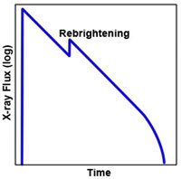

Soft X-ray transients (SXTs) are X-ray binary systems that have long periods of quiescence interrupted by outbursts of low-energy (soft) X-rays. Alternatively known as X-ray novae, the majority (~75%) of SXTs contain a black hole and low-mass main sequence companion star in orbit around one another. There are only about 6 confirmed SXTs with a neutron star as the compact object, all of which also show Type I X-ray bursts.
It is thought that SXTs arise in a similar manner to dwarf novae, through instabilities in the accretion disk around the compact object. Basically, during quiescence, material accumulates in the accretion disk until a critical point is reached. The disk then becomes unstable and is dumped onto the compact object, releasing a burst of X-rays. However, the greater duration of SXT bursts (months) and the time interval between bursts (decades) cannot be accounted for by the standard disk instability model used for dwarf novae, and additional factors such as X-ray illumination and irradiation of the accretion disk are required for the model to match the observed properties of SXTs.

During outburst, the X-ray luminosity of a SXT can rise by a factor of 100 – 10,000. Most display a fast rise ( ~few days) followed by a slower decline (~30 days), with a rebrightening of the X-ray light curve ~20 days after maximum. The optical output of the companion star also increases during outburst by about 4 – 7 magnitudes, depending on the size of the star, and they are also visible at radio wavelengths.